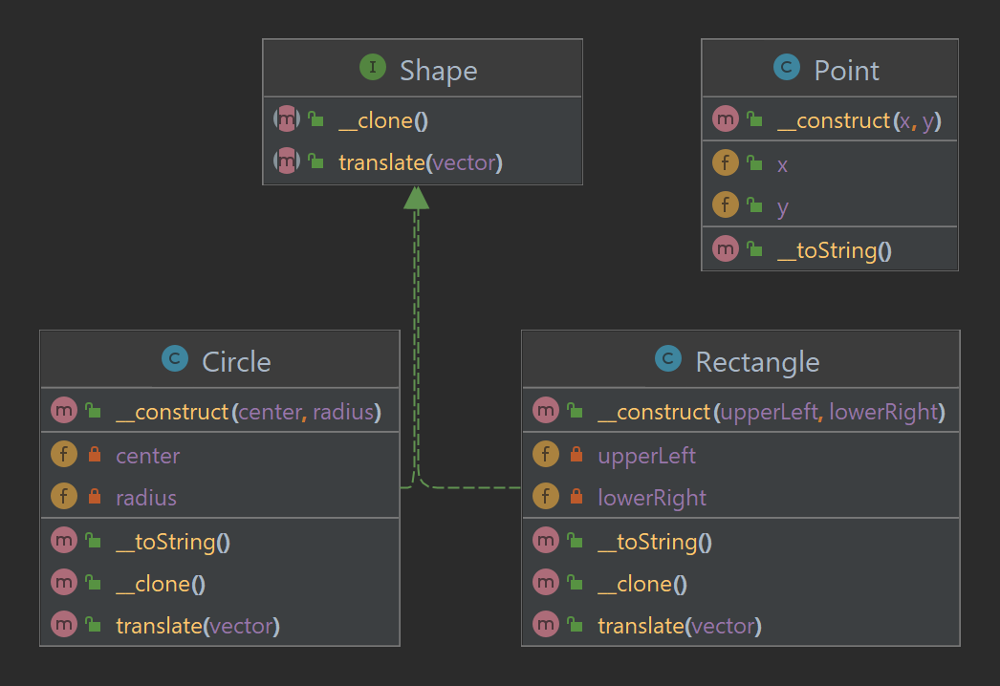
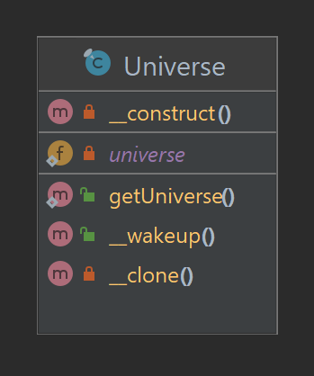
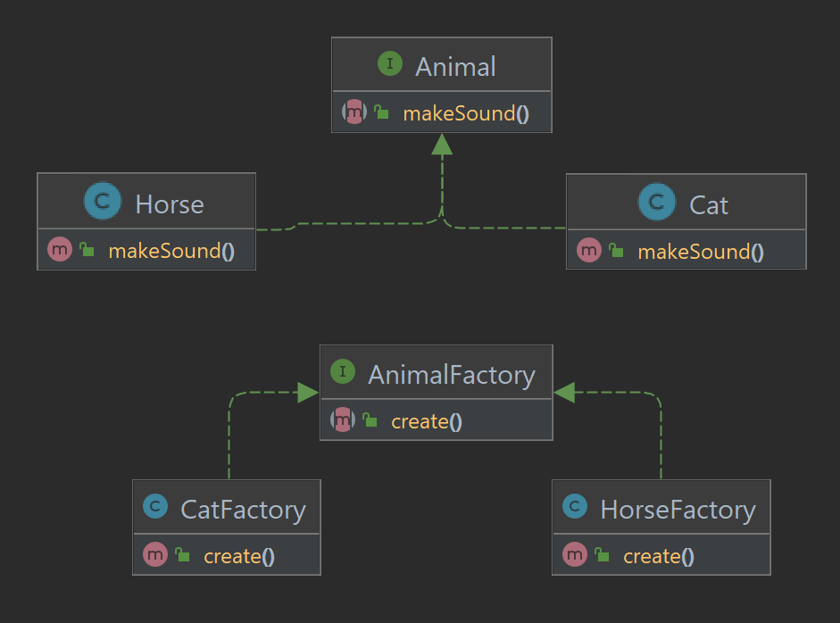
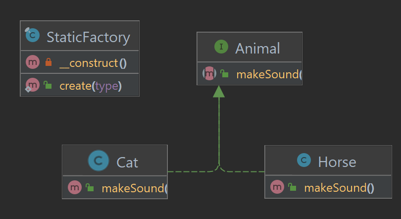
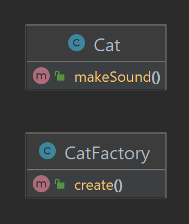
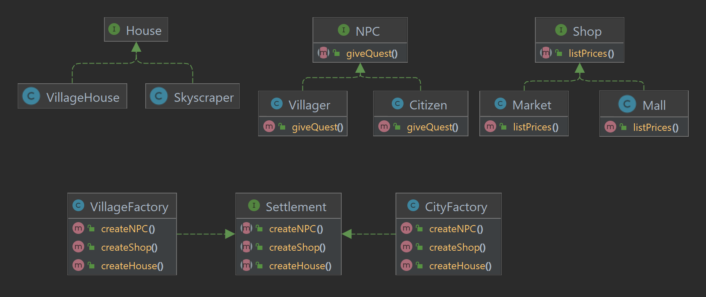
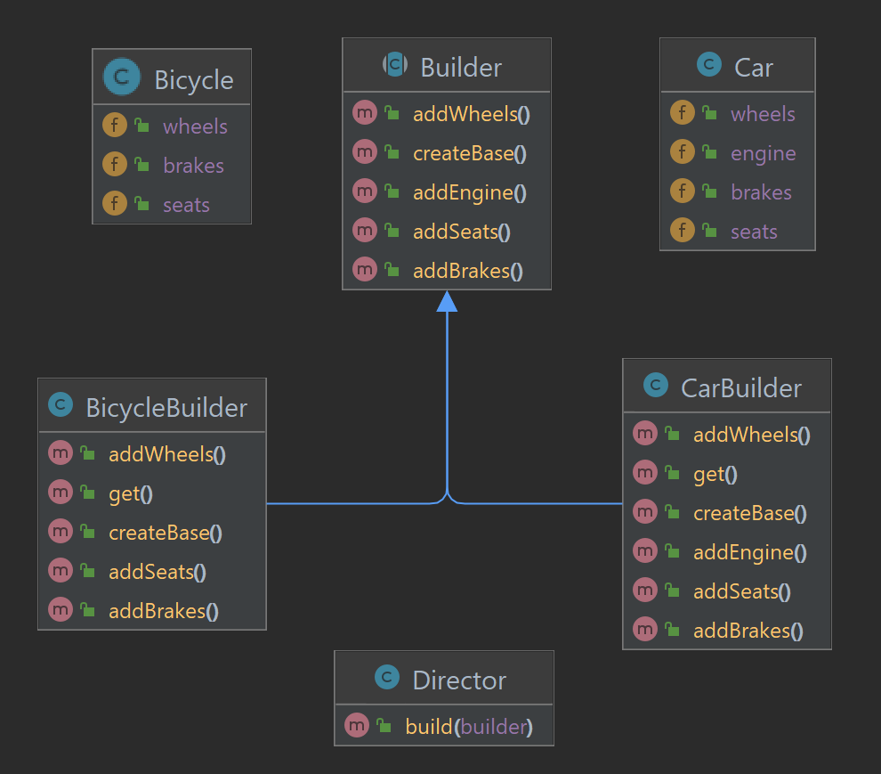

Шаблонът за дизайн Прототип се използва за клониране на вече построени обекти. Така е възможно да се пропуснат скъпи проверки, които биха били необходими при създаване с конструктор.
Също така става възможно клонирането на обекти, без предварително да знаем нищо за техния тип.
В php е приложен този шаблон, като се използва запазената дума clone.
Тя създава плитко копие на обекта, след което се извиква метода __clone() на вече клонирания обект.

Фигура 1. Примерна UML диаграма на Прототип.
<?php
class Circle implements Shape
{
private Point $center;
private float $radius;
public function __construct(Point $center, float $radius)
{
$this->center = $center;
$this->radius = $radius;
}
public function translate(Point $vector): void
{
$this->center->x += $vector->x;
$this->center->y += $vector->y;
}
public function __toString()
{
return "Circle with center $this->center and radius $this->radius";
}
public function __clone()
{
$this->center = clone $this->center;
}
}
?>
Код 1. Фрагмент от имплементация на Прототип.
В горния пример, при клониране на обект от тип Circle, се извиква метода __clone() на клонирания обект. След това се клонира и
обекта от референтен тип Point.
Не трябва да се забравят и подводните камъни, които носи този шаблон.
При достатъчно сложна йерархия е възможно да има циклични зависимости, което да доведе до бездънна рекурсия от клониране.
Бърз начин за справяне с този проблем е да се сериализира и десериализира обекта.
Сек
Шаблонът за дизайн Сек позволява глобален достъп до обект от даден клас, като в същото време подсигурява,
че съществува най-много една истанция на обекта. Също позволява и късна инициализация на обекта. Примери за приложение са логове, връзки с бази данни, ключалки за файлове и т.н.

Фигура 2. Примерна UML диаграма на Сек.
<?php
final class Universe
{
private static ?Universe $universe = null;
public static function getUniverse(): Universe
{
if (self::$universe == null)
self::$universe = new self();
return self::$universe;
}
private function __construct()
{
echo "Creating the universe\n";
}
private function __clone()
{
// No cloning
}
public function __wakeup()
{
throw new Exception("Cannot deserialize a singleton");
}
}
?>
Код 2. Примерна имплементация на Сек.
В горният пример е приложен шаблонът с късна инициализация. Забраняват се всички начини за създаване на обект от класа, извън самия клас, както и наследяването.
Един от минусите на шаблона е че се затруднява тестването. Освен глобалния достъп, другият минус е липсата на гъвкавост.
Ако по-късно се установи, че се налага създаването на повече от един обект от съответния клас, самото рефакториране може да излезе скъпо. Някои разработчици на софтуер го считат и за анти-шаблон.
Метод фабрика
Метод фабриката, позната още като Виртуален конструктор, дефинира някакъв метод за създаване на обекти, независимо дали е абстрактен или не, като
позволява на класовете наследници да презапишат този метод. По-този начин лесно се добавят нови класове към съществуваща вече имплементация.

Фигура 3. Примерна UML диаграма на Метод фабрика.
<?php
interface Animal
{
public function makeSound(): void;
}
interface AnimalFactory
{
public function create(): Animal;
}
class Cat implements Animal
{
public function makeSound(): void
{
echo "Meow";
}
}
class Horse implements Animal
{
public function makeSound(): void
{
echo "EEEeee";
}
}
class CatFactory implements AnimalFactory
{
public function create(): Animal
{
return new Cat();
}
}
class HorseFactory implements AnimalFactory
{
public function create(): Animal
{
return new Horse();
}
}
?>
Код 3. Примерна имплементация на Метод фабрика.
В горния пример, креационният метод е create() на интерфейса AnimalFactory.
Чрез използването на този интерфейс, се делегира създаването на обектите на имплементиращите го класове.
Статична фабрика
Статичната фабрика е клас, който съдържа статичен метод за създаване на обекти. Този подход може да доведе до трудности при тестване и рефакториране. Добре е да се помисли за алтернативен подход към проблема.

Фигура 4. Примерна UML диаграма за Статична фабрика.
<?php
interface Animal
{
public function makeSound(): void;
}
class Cat implements Animal
{
public function makeSound(): void
{
echo "Meow";
}
}
class Horse implements Animal
{
public function makeSound(): void
{
echo "EEEEeee";
}
}
final class StaticFactory
{
public static function create(string $type): Animal
{
return match ($type)
{
'cat' => new Cat(),
'horse' => new Horse(),
default => throw new InvalidArgumentException("Unknown type"),
};
}
private function __construct()
{
// Empty
}
}
?>
Код 4. Примерна имплементация на Статична фабрика.
В горния пример е приложена Статична фабрика за създаване на обекти от тип Animal.
При добавяне на нов клас имплементиращ Animal, е нужно да се модифицира и креационния метод на Статичната фабрика.
Проста фабрика
Една от разликите между Простата фабрика и Статичната фабрика е, че вече методът не е статичен.
Тоест, вече може да се правят всичките ООП магии: да се моква, да се тества, да се създават производни класове и т.н.

Фигура 5. Примерна UML диаграма на Проста фабрика.
<?php
class Cat
{
public function makeSound(): void
{
echo "Meow";
}
}
class CatFactory
{
public function create(): Cat
{
return new Cat();
}
}
?>
Код 5. Примерна имплементация на Проста фабрика.
В горния пример е приложена Проста фабрика за създаване на обекти от тип Cat.
Абстрактна фабрика
Шаблонът за дизайн Абстрактна фабрика се използва за създаване на фамилия от обекти, които са свързани или зависими, без да се интересуваме от
конкретните техни класове. Типичен пример за приложение на този шаблон са графичните елементи. В Уиндоус искаме всичко да си е Уиндоуско.
Няма смисъл да се комбинира бутонче за Линукс с прозорец за Уиндоус и иконки за Мак.

Фигура 6. Примерна UML диаграма на Абстрактна фабрика.
<?php
class VillageFactory implements Settlement
{
public function createNPC(): NPC
{
return new Villager();
}
public function createShop(): Shop
{
return new Market();
}
public function createHouse(): House
{
return new VillageHouse();
}
}
class CityFactory implements Settlement
{
public function createNPC(): NPC
{
return new Citizen();
}
public function createShop(): Shop
{
return new Mall();
}
public function createHouse(): House
{
return new Skyscraper();
}
}
?>
Код 6. Фрагмент от имплементация на Абстрактна фабрика.
В горният пример е приложен шаблонът. Вижда се ясно кои ни са фамилиите от обекти които са свързани.
В последствие ако се окаже, че ни трябват и извънземни селища, си имплементираме нужните интерфеийси и си правим фабриката.
Тук е добре да се отбележи, че разширяването на функционалността става без да е нужно да се променят вече създадените класове.
Строител
За Строител са познати две версии на шаблона. Единият вариант е добре известен в Java и се използва само Строител.
Другият вариант вкючва режисьор, който знае за интерфейса на Строителя, но не знае нищо за конкретните имлементации.

Фигура 7. Примерна UML диаграма на Строител.
<?php
abstract class Builder
{
public function createBase() {}
public function addWheels() {}
public function addEngine() {}
public function addSeats() {}
public function addBrakes() {}
}
class Director
{
public function build(Builder $builder): void
{
$builder->createBase();
$builder->addSeats();
$builder->addWheels();
$builder->addBrakes();
$builder->addEngine();
}
}
?>
Код 7. Фрагмент от имплементация на Строител с режисьор.
Тук режисьорът знае как се строи целия обект, докато строителя знае как се правят отделните части.
Кодът на клиента не трябва да знае как се конструира даден обект, а само какъв конкретен строител му трябва.
Режисьорът пък не се интересува от конкретния строител, а само от това че имплементира някакъв общ интерфейс
и съответно известява строителя, когато някоя стъпка трябва да бъде направена.
Пул
Шаблонът за дизайн Пул позволява преизползването на вече построени обекти.
Клиентът си взима някакъв обект от Пула, използва го известно време, след което го връща обратно.
След това, ако е необходимо, се обработва обекта за повторно преизползване. Добре е да се ползва при инстанциацията на много обекти,
чието създаване е скъпо, но пък техния живот е сравнително кратък.
Добър пример за приложение на този шаблон е при нишките на операционната система.